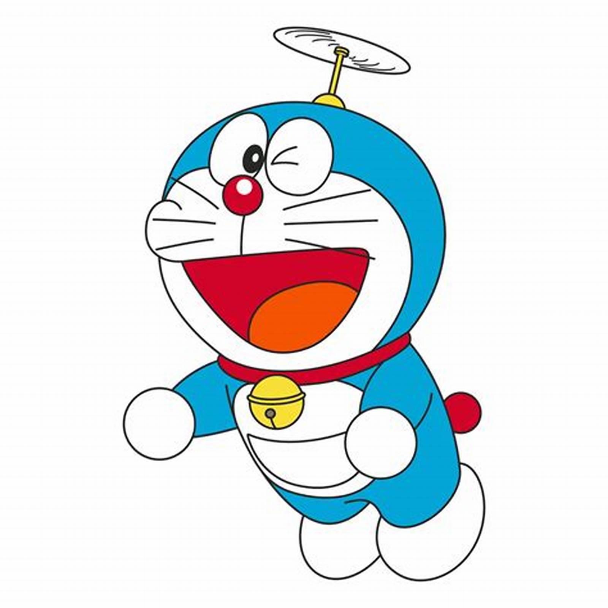
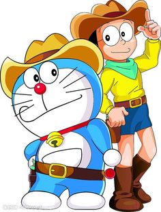
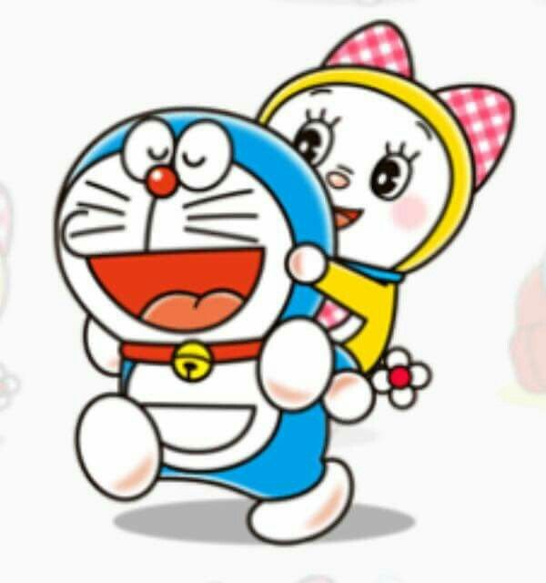

Doraemon
Doraemon is a Japanese manga series written and illustrated by Fujiko F. Fujio. Doraemon is a robotic cat that comes from the 22nd century. He comes to 20th century and stays with Nobi Family. The Nobis love Doraemon very much. So Doraemon always help the Nobis with the devices from 22nd century. The manga was first serialized in December 1969, with its 1,345 individual chapters compiled into 45 tankōbon volumes and published by Shogakukan from 1970 to 1996.
Doraemon & Nobita with their Family & Friends



Doreamon's Gadgets